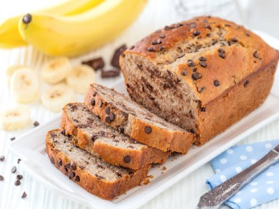

|  |
Food's name: Banana bread▸ Ingredients:
|
▸ Time to prepare: 1 hour 25 minutes
▸ Approx quantity: 1 loaf of bread
▸ Detailed recipe:
Step 1: Preheat the oven:
- Open the oven at 170°C for about 10 minutes to preheat the oven. Then use baking paper to line the mold to prevent sticking.
Step 2: Process the banana mixture:
- While waiting for the oven to heat up, take a bowl and peel the bananas, just put the intestines into it. Use a fork or spoon to mash the bananas.
- For the ingredients including 160 grams of sugar, 120 ml of cooking oil, 120 ml of unsweetened fresh milk, and 1 egg yolk, mix well until a smooth
mixture is obtained. Call it mixture 1.
- In another bowl, mix all-purpose flour, baking soda, and salt. Pass through a sieve to get the whole fine powder. Call it mixture 2.
- Add mixture 2 to mixture 1, use a spatula to beat until the ingredients are combined and smooth.
- If using chocolate chips, add one portion to the above mixture and mix well. Leave a little to use to decorate the cake for more attractiveness.
Depending on how sweet you are, you can adjust the amount of chocolate in the cake. In addition, you can replace chocolate chips with dried nuts
and dried fruits depending on your preferences to create the most satisfying cake.
Step 3: Bake the cake:
- Pour the mixture into the cake mold, pouring only about 3/4 of it. Then put in the oven at 170°C, time 50 minutes. Depending on the type of mold
to adjust the heat and time. If the mold is large, the baking time will be longer than the small one. From time to time you should pay attention to see
if the cake has turned golden.
- To check if the cake is edible, use a toothpick or long skewer to poke the middle of the cake, when it comes out, the toothpick/skewer is still dry.
- Remove the cake from the oven and let it cool on a tray. When eating, you can cut it into pieces and enjoy it.
- Chocolate cake mix so the color will be a bit dark, eating will find the sweet aroma of bananas very attractive.
=> So you've got yourself a delicious loaf of bread !
▸ Calories and related information: